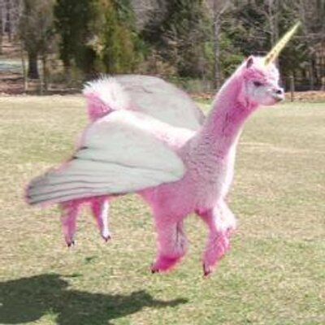
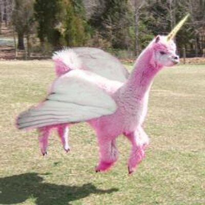
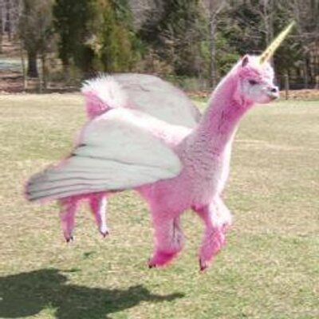

buy your concentrated unicorn farts here
or call 555-555-5555 for more information

real unicorns have been discovered, with image proof. Unicorns have been hated on for too long!
they have been called horrible things like myths and even worse, Fairy tales!
buy your unicorn horn now! click here
for more details

buy your concentrated unicorn farts here
or call 555-555-5555 for more information